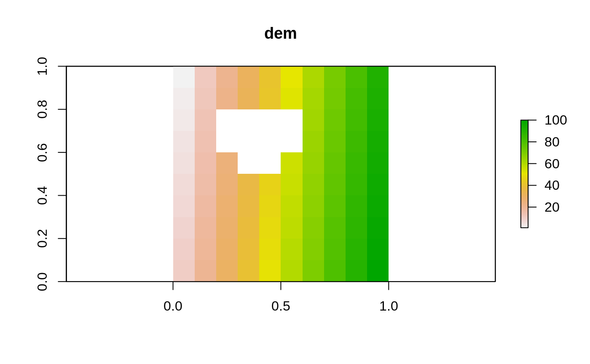
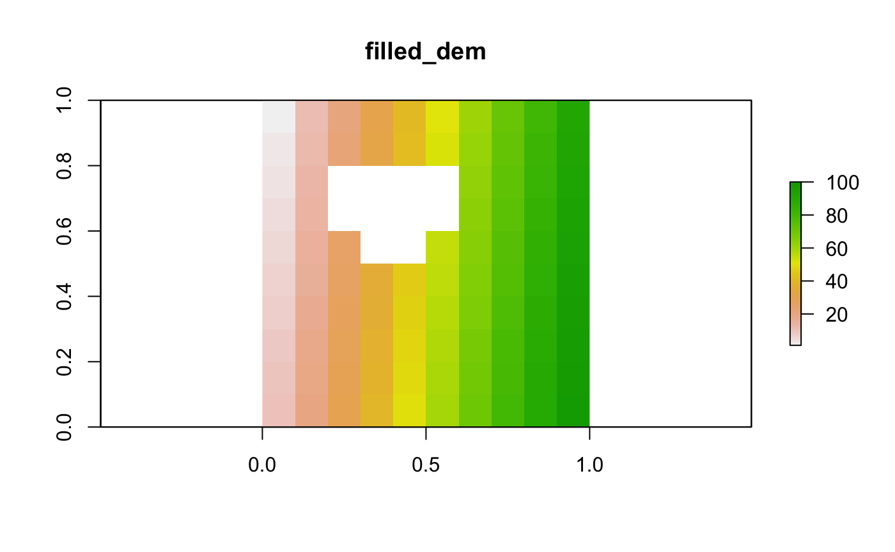
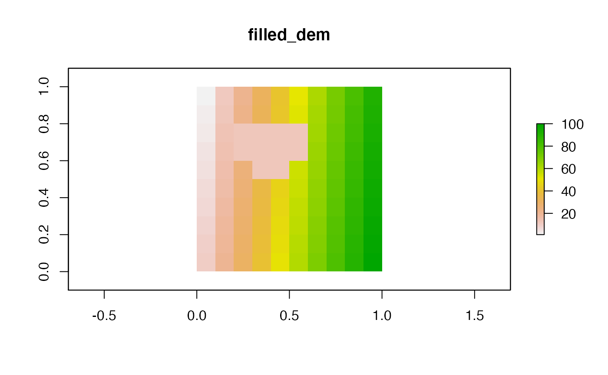

#> Loading required package: spThe purpose of this vignette is to outline the sink filling routine used by the sink_fill function and provide some simple demonstrations.
The routine used is deliberately simple, doing the minimum required to populate sinks and missing data to produce valid flow directions. More complex routines can by found in many GIS packages and published work.
In the following we take \(z_{k}\) to be the height of the dem at cell \(k\), \(\mathcal{N}_{k}\) to be the set of index values for the neighbouring points in space with non-missing (i.e not NA or NaN in R) height values and \(\hat{\mathcal{N}}_{k}\) teh set of index values for neighbouring points with finite heights.
To determine which data are missing non-finite values not associated witht he edge of the DEM are identified. This is done by
NA
raster::clump) of all NA cell valuesCells with missing data are assigned a value of -Inf (\(-\infty\)). Initialise a set \(\mathcal{S}\) of the locations where the DEM value needs replacement with the location of the -Inf values. The locations are stored a single numerical index of the DEM cell.
A sink is any pixel in the DEM for which \(z_{k} \leq \min_{j \in \mathcal{N}_k} \left(z_{j}\right)\). A pass through the DEM can be used to identify sinks. Where a sink is identified set \(z_{k}\) to -Inf (\(-\infty\)), add \(k\) to \(\mathcal{S}\) and check the neighbouring cells to ensure they are not now sinks.
Replacing the unknown values from the ‘lowest’ up would ensure all could be relaced by a single pass through the points in \(\mathcal{R}\). However since the values are not known this not possible. Instead we approximate this by:
Note that the replacement rule in step 3 ensure that no new sinks are generated.
. New dem values are computed as the mean of the adjoining finite cell values. New minimums for the adjacent cells are then computed before resorting the sinks and moving on.
Example dates is generated randomly
M <- matrix(1:100,10,10)
dem <- raster::raster(M,
crs="+init=epsg:27700") # UK OS projection
chn <- rasterToPolygons(dem,function(x){x==1})
chn$length <- 10
chn$startNode <- "node1"
chn$endNode <- "node2"
chn$width <- 0.001
ex1_dem <- dem
ex1_dem[c(23:26,33:36,44:45)] <- NA
ex1_dir <- tempfile("ex1")
dir.create(ex1_dir)
ex1 <- dynatopGIS$new(file.path(ex1_dir,"meta.json"))
#> Warning in initialize(...): Creating meta file at/tmp/Rtmp4mOKCh/
#> ex149ba2d7a17a5/meta.json
#> Warning in private$check_meta(verbose): No checks on the meta are currently
#> performed
ex1$add_dem(ex1_dem)
#> Loading required namespace: igraph
ex1$add_channel(chn)
ex1$compute_areas()
#> Warning in .local(x, ...): This function is only useful for Raster* objects with
#> a longitude/latitude coordinates
ex1$sink_fill()
ex1$plot_layer("dem",FALSE)
ex1$plot_layer("filled_dem",FALSE)
unlink(ex1_dir, recursive=TRUE)
ex2_dem <- dem
ex2_dem[c(23:26,33:36,44:45)] <- NA
ex2_dir <- tempfile("ex2")
dir.create(ex2_dir)
ex2 <- dynatopGIS$new(file.path(ex2_dir,"meta.json"))
#> Warning in initialize(...): Creating meta file at/tmp/Rtmp4mOKCh/
#> ex249ba679945b2/meta.json
#> Warning in private$check_meta(verbose): No checks on the meta are currently
#> performed
ex2$add_dem(ex2_dem)
ex2$add_channel(chn)
ex2$compute_areas()
#> Warning in .local(x, ...): This function is only useful for Raster* objects with
#> a longitude/latitude coordinates
ex2$sink_fill()
ex2$plot_layer("dem",FALSE)
ex2$plot_layer("filled_dem",FALSE)
unlink(ex2_dir, recursive=TRUE)